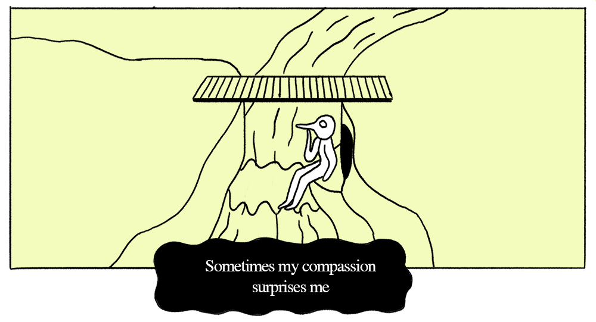

Indeterminacy comics

The river and the bird-monster
A comic strip about a bird-like monster who lives under a bridge. In every strip, the monster encounters someone (or something) trying to cross the bridge. The monster makes a judgment and decision, which drives a different outcome in the story. The first and last panels are the same.
Template – All stories use this template.
The shepherd – The monster encounters a shepherd.
The bird-hunter
Bird-monster meets itself
Nobody turns up
Narrative Indeterminacy
Narrative indeterminacy follows the principles of John Cage’s musical indeterminacy, which is the ability of a piece to be played in different ways. This project is about using some limitations and rules – such as a story structure and basic plot – which can be interpreted by the artist in a number of different ways.
Project description Google doc
Archive
Perpetual escape (abandoned)
Initial discovery
A bird in the hand is worth two in the bush